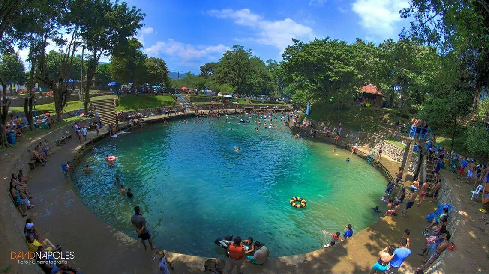

Lugares Recreativos de San Jose Chiltepec

San José Chiltepec, al ser una comunidad en Oaxaca, México, puede tener algunos lugares de recreación locales donde los residentes y visitantes pueden disfrutar de actividades de esparcimiento. Aunque la información específica puede variar y dependerá de las características de la comunidad, algunos lugares recreativos comunes podrían incluir:
Plazas o parques: Puede haber plazas o parques públicos donde las personas se reúnen para socializar, relajarse o realizar actividades al aire libre. Estos espacios a menudo cuentan con áreas verdes, bancas y juegos para niños.
Instalaciones deportivas: Pistas de básquetbol, campos de fútbol o áreas para practicar deportes recreativos podrían estar disponibles para la comunidad.
Ríos o cuerpos de agua cercanos: Si hay ríos, arroyos o cuerpos de agua en la zona, podrían ser utilizados para actividades recreativas como nadar, pescar o realizar paseos en bote.
Centros culturales o recreativos: Algunas comunidades cuentan con centros culturales donde se llevan a cabo actividades artísticas, talleres, exposiciones o eventos culturales para el disfrute de los residentes y visitantes.
Fiestas y eventos locales: Durante festivales o celebraciones especiales, la comunidad puede organizar eventos recreativos, como bailes, concursos, ferias gastronómicas, juegos tradicionales, entre otros.
Es importante tener en cuenta que la disponibilidad y variedad de lugares recreativos pueden ser limitadas en comparación con áreas urbanas más grandes. Sin embargo, estos espacios suelen ser importantes para la vida social y el entretenimiento local en comunidades como San José Chiltepec.